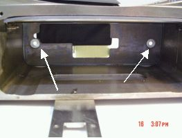

Operating Documentation
Direction 5193575-800, Rev# 5
LightSpeed 7.X Service Information - Adv
Operating Documentation |
| Required Persons | Preliminary Reqs | Procedure | Finalization |
|---|---|---|---|
| 1 | 60 mins | 15 mins | Timing Not Applicable |
This procedure documents how to remove and replace the collimator filter assembly.
| Last Revised: | 23 October 2008 |
| Condition | Reference | Eff |
|---|---|---|
Collimator Control Board (CCB) Chassis disconnected | - | - |
Disconnect the CCB Chassis assembly. See Collimator Control Board Replacement procedure
Remove the (4) filter assembly mounting screws and remove the assembly.
Illustration 1: Mounting Screw Locations

| NOTE: | Collimator assembly will have two guide pins. The pins are used to position the collimator inside the frame properly. The filter will fit tightly, with no gap, when the pins are properly aligned. |
Illustration 2: Frame locator holes for guide pins

Insert the filter assembly into the frame
Secure new filter assembly to frame using (4) screws with lock and flat washers. Torque the mounting screws to 3 N-m (26.6 lb-in, 2.2 lb-ft)
Reattach the Collimator Control Board (CCB) Chassis assembly. See CCB Replacement
No finalization required.